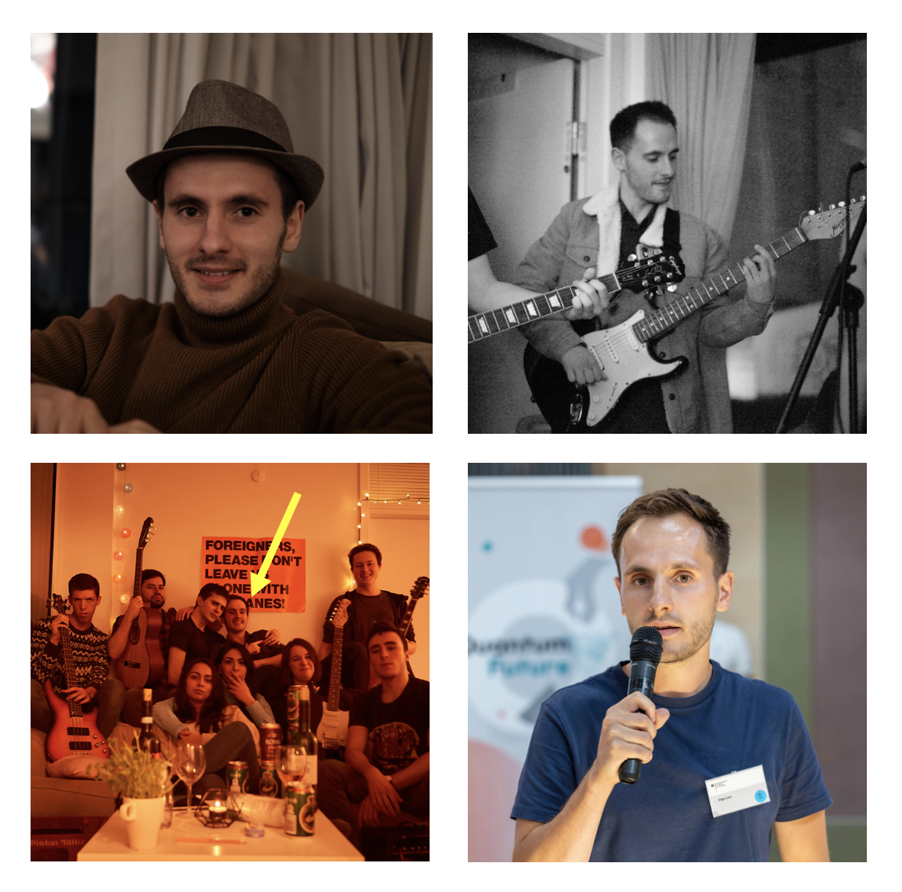

Who am I?
I am Iñigo (pronouced /e-gne-go/). I am a maker and an entrepreneur. I am 25 years old and Spanish but I have an international soul. I am seduced by the simplicity of good ideas and crazy about creating things with my own hands: from visual algorithms that vibrate with the beat of the music, to a vision system that broadcasts what my former cat would see through her day or even a handcrafted brewing station.
*Interactive NestCPH logo :)
I studied quantum physics but moved to the creative side to combine technology, music and visuals. In my free time I also find myself stuck trying to launch startup ideas, the latest one an optical chip that would replace electronics and that works by combining color frequencies.
I have experience living in an international community where all the neighbors in the building would get involved in shared events: opera nights, jam sessions in the rooftop or masterchef cooking contests were some of them. And it was simply the best time of my life. That is why I resonated so much with your leit motif “You are the sum of those who surround you”.
I am the type of person who gets involved in the community life and drives events – I get sentimental when talking about how a friend ad me created up a Sunday night jam session in our flat. At some point we grew up so much that we would gather 12 musicians and even have an alto saxo! I was playing the guitar and driving the session with a synth in my iPad.
Further details
I am planning to stay long term in the city (and therefore, in the house) because I have a full time job as a software developer in a company called Capture One. Besides that, I am willing to move asap and the rent and the rooms description seems perfect vfor me. I am clean and organized. But most importantly, I am great at fixing broken dishwashers.
Please, reach out
Please, rreach out if you find me interesting and you would like to live with me. I would love to enter your community and bring my best energy to make it even better! Lets go for a coffee all together. And I hope I can convince you I am the perfect fit for NestCPH.
